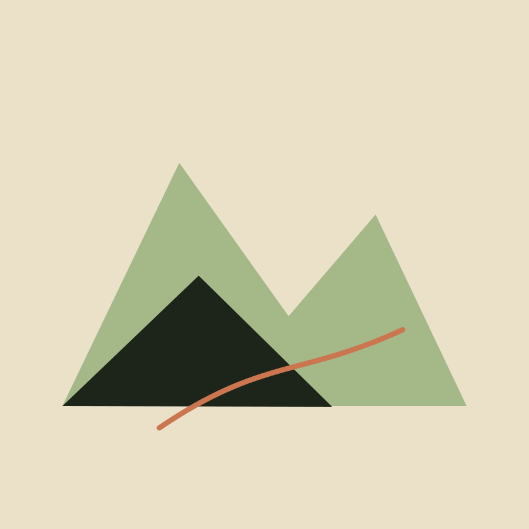
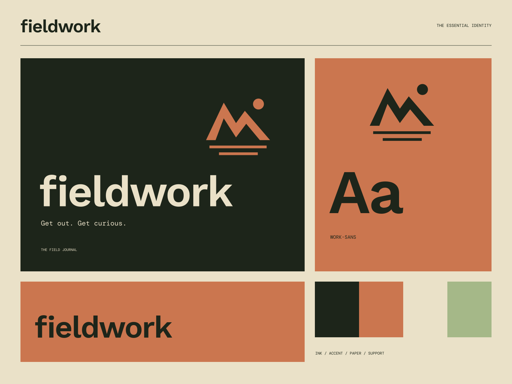

01
Built for outside
Honest equipment for the places a screen cannot take you.
FIELD NOTES / GOODS FOR GOING
Get out. Get curious. Useful, wherever you wander.

A coherent little world
Useful, wherever you wander. Get out. Get curious.
01
Honest equipment for the places a screen cannot take you.
02
Field notes that make familiar landscapes feel new again.
03
A focused collection of objects with a job to do.

The point of view
Layered survey maps, trail-equipment details, and small expedition labels. A rich landscape carries the warmth of worn canvas and useful things.